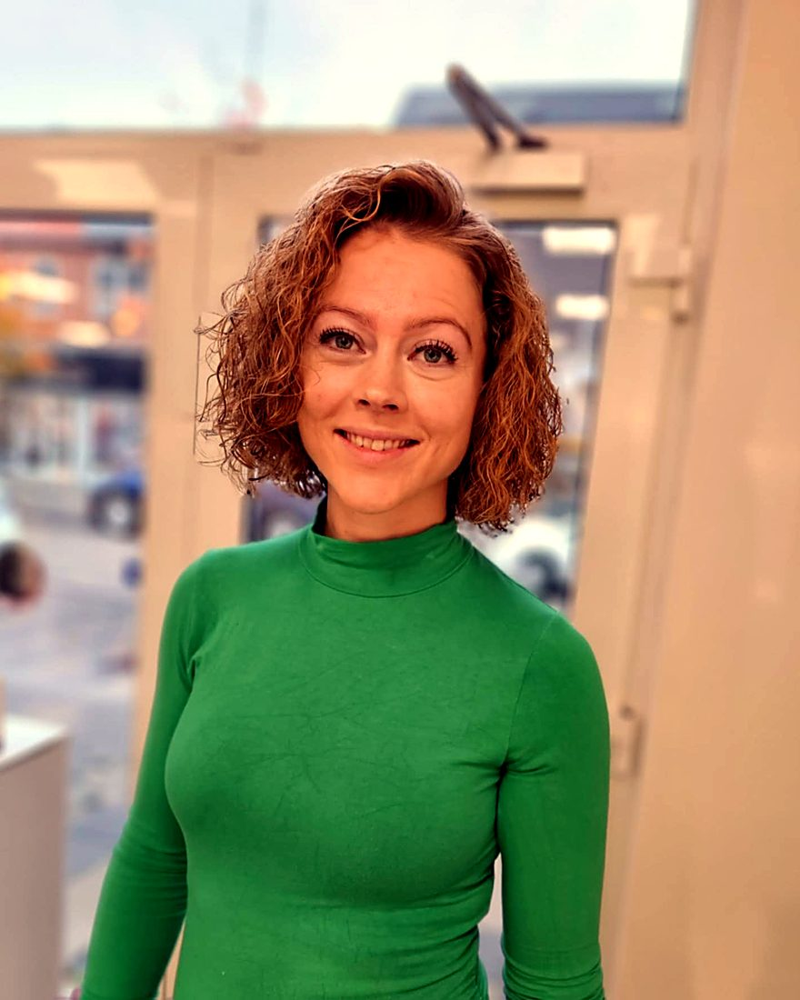

Hvorfor vælge os til din dameklip?
En god frisør handler ikke kun om at klippe håret kortere. Det handler om at finde en frisør, der forstår dit hår, din stil og hvor meget tid du vil bruge foran spejlet. Vi arbejder med alle hårtyper og længder og tager os tid til at finde det snit, der klæder dig.
Vores frisører holder sig opdateret på trends og teknikker, men en frisure skal også fungere, når du selv har vasket håret. Derfor får du altid råd om pleje og styling med hjem.
Sådan foregår en dameklip hos os
- Rådgivning: vi taler om, hvad du ønsker, og ser på dit hårs fald, struktur og tykkelse. Tag gerne inspirationsbilleder med.
- Vask: en grundig vask, og hvis du vil, en luksus hårkur med hovedbundsmassage for 159 kr.
- Klip: vi klipper efter dit naturlige fald, så frisuren også sidder, når den lufttørrer.
- Føn og styling: vi fønner håret færdigt og viser dig, hvordan du får samme resultat derhjemme.
En frisure, der passer til dit hår
Glat, bølget eller krøllet hår kræver hver sin teknik. Vi tilpasser klipningen, så den arbejder med dit hår i stedet for imod det. Uanset om du drømmer om bløde bølger, et stilrent pageklip eller et let lagklip, finder vi sammen den løsning, der fremhæver dine bedste træk.
Er du i tvivl om kort eller langt, kigger vi på din ansigtsform, din hårtekstur og din hverdag. Vil du se, hvad der er populært lige nu, kan du læse vores guide til dameklip i efteråret 2026.

Kombinér klip og farve
Mange af vores kunder kombinerer dameklip med balayage, babylights eller reflekser. Det er en god måde at forny looket på. Book i god tid, så vi kan afsætte tid nok til begge dele. Farve på mellemlangt og langt hår er inkl. Olaplex.
Din lokale damefrisør i Herning
Hot Cut ligger på Søndergade 12, midt i Herning. Det er nemt at kombinere besøget med en tur i gågaden eller en kop kaffe i byen. Mange af vores kunder har kommet hos os i årevis, fordi de ved, at vi husker dem og deres hår fra gang til gang.
Ud over dameklip tilbyder vi farve, extensions, keratin, permanent og opsætning til bryllup og konfirmation. Se alle behandlinger på prislisten.